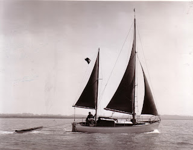
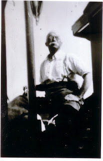
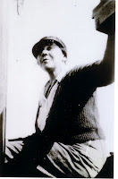
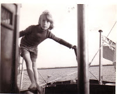

I spent two nights on board Peter Duck this weekend.
It had been an unsatisfactory week, unproductive, full of petty stresses. I’m
in the marketing stage for Ghosting Home, (concluding volume of the Strong
Winds trilogy) and scrabbling for the time to make final cuts and
corrections to Fifty Years in the Fiction Factory, another long term
project which is scheduled for publication in September. (September? I must be
mad!). There’s the ever-present buzz of family life, more insistent some weeks
than others – GCSEs for Archie, booking university open days for Bertie, a
birthday for Frank, a birthday for the twins, a sharp dip down the confusional
roller-coaster for Mum, builders making a start on Francis’s new shed, a close
friend rushed into hospital, visits, extra school runs needed – you know the
sort of thing. It goes on …
 |
| George Jones (my father) sailing Peter Duck |
{kind=link}
It wasn’t beautiful as I set off
in the fading light: the sky was overcast and the water brownish-grey with
sudden dark patches as the small squalls dashed across its surface. No, it
wasn’t beautiful; it was completely and utterly wonderful.
Sometimes sailing can feel like
skiing or skating when even a middle-aged yacht like Peter Duck picks up
power and speed and the water hisses past, sliced aside by the smoothness of
her hull. No, I didn’t take photos. Or
make notes. Didn’t even think of it. Didn’t think of anything at all except
keeping my sails full and negotiating the best line against an assertive spring
flood. The breeze was freshening all the while and I felt as if I could never
bear to stop. Down the river we went, almost to the sea: then back and suddenly
tired, therefore, gladly, onto an unfamiliar mooring in the dark and retreating to the
shelter of the cabin.
My companion, Peter Duck,
was built for Arthur Ransome, author of the Swallows and Amazons series,
and she’s been part of my life since I was three years old. Intellectually, I’m
proud of the Ransome connection and I’m happy when people want to talk about
her, look at her, touch her. John McCarthy came for on board last summer and I
could see that he was genuinely moved to be holding the tiller Ransome had
held, sitting where he had sat. While writing the Strong Winds trilogy I’ve enjoyed
re-thinking what some of Ransome's stories might look like in the contemporary world. How would his characters cope if faced with a Risk Assessment, for instance? Playing with some of these ideas has been fun and my admiration for Ransome's
achievement has been enhanced. Through the 1930s and into the 1940s he created
a coherent alternative world of adventure and imagination that has stayed with
and sustained many people through their lifetime. Many of his early readers
were then inspired to go sailing themselves. Through his long and terrifying
captivity in the Lebanon John McCarthy cherished the dream of learning
to sail. It helped him keep his spirit and his sanity.
 |
| Arthur Ransome sailing Peter Duck |
{kind=link}
Emotionally, I’ve never felt that
close to Ransome. It’s Peter Duck herself who is the direct link to the
beauty of the rivers and the small-scale challenges of East Coast creek-crawling
– and whatever essential fact it is that makes me myself. I’ve always known that Ransome
didn’t really warm to Peter Duck and I’ve thought the less of him because of it. Now I can understand that Peter Duck came at the wrong time in his
life, when his creativity was almost at an end, and I feel pity for him – as
well as gratitude that he brought her into existence in the first place.
 |
| Evgenia Ransome on Peter Duck |
{kind=link}
Last weekend my feelings changed. I was
dipping into Roland Chambers’s account of Ransome’s involvement in the Russian
Revolution and the dangerous, complex years that followed. He had fallen in
love with Trotsky’s secretary Evgenia Schelepina and by 1919-1920 he was
desperate to get her out of Moscow and bring her to some sort of safety. He was
already married with a daughter, he was politically suspect as a double agent, his wife refused
a divorce, his mother was unsympathetic, his newspaper sacked him. He needed to
keep writing and earning and spying for the British: Evgenia had to be persuaded not to
smuggle any more roubles or diamonds for the Bolsheviks.
They weren't obviously compatible. He was sentimental, devoted, (probably irritating) and set in his ways: she was awkward, passionate, moody, opinionated and critical.
Many of Ransome’s admirers have struggled to like Evgenia but theirs was a huge, lifelong, love story. I could understand the profound relief they had experienced in
1921 when they left politics and the land behind on their first Baltic cruise
on board the ketch Racundra.
 |
| Julia Jones sailing Peter Duck (1960) |
{kind=link}
Then, last weekend for the first time, I fully
imagined them, both of them, elderly and rather cross, in Peter Duck’s
cabin with me. I’ve never done that before and it was awe-inspiring. I could
see at once what the problem had been. They were, quite simply, too big –
physically and in their personalities. I felt humble, protective and invisibly
connected.
(Only the paperback
version of Ghosting Home is currently available. The ebook will be ready
for publication date, July 2nd 2012.)